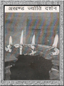
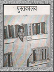
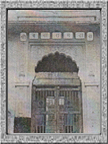
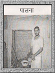

| ज्योति दर्शन |
|

रामनिवास-श्रीरामसभा में देवल के दायीं ओर अखण्ड ज्योति के दर्शन होते हैं। सं. 2028 में जब नवग्रह इकटठे हुए उस समय एक माह का अखण्ड नाम जप एवं परम पूज्य स्वामी श्री रामसुखदासजी महाराज के सत्संग आयोजन के साथ परमहंस श्री अभयरामजी महाराज के द्वारा अखण्ड ज्योति की स्थापना की गर्इ। घी की ज्योति भक्तों को भक्ति की ज्योति प्रदान करती है। |
| पुस्तकालय |
|

रामनिवास-श्रीरामसभा में पुस्तकालय सुशोभित है। इस पुस्तकालय में हजारो की संख्या में पुस्तकें रखी हुर्इ हैं। सम्पूर्ण जोधपुर के विधार्थी इस पुस्तकालय द्वारा लाभान्वित होते हैं। कर्इ शोधकर्ताओं ने इस पुस्तकालय द्वारा शोध कार्य करके डाक्टरेट की उपाधियाँ भी प्राप्त की है। |
| विद्या मंदिर |
|

रामनिवास-श्रीरामसभा में विद्या मंदिर का कमरा सुशोभित है। बाल सन्त यहाँ विद्या अध्ययन करते हैं। इसी कमरे में जल का छोटा टांका कुंड भी है। सन्तों के लिए जल-सेवा भी यहीं से होती हैं। |
| पालना |
|

देवल में परमहंस सन्तों का पालना स्थापित है। राजघराने से राजाओं और रानियों का सन्त-दर्शन हेतु आगमन होता रहता था। परमहंस सन्तों के बैठने हेतु राजघराने से चन्दन का पालना इस पावन धाम को भेंट किया गया।, जो आज भी देवल में स्थापित हैं। |